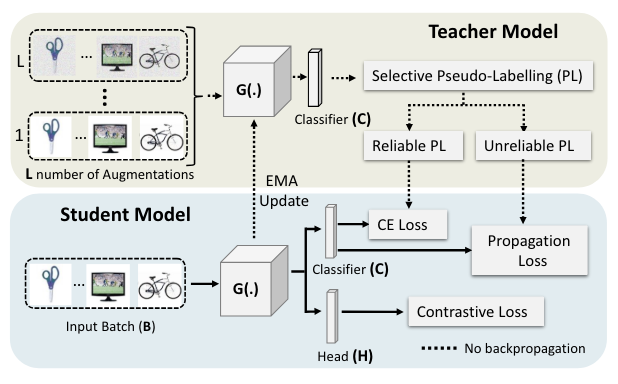
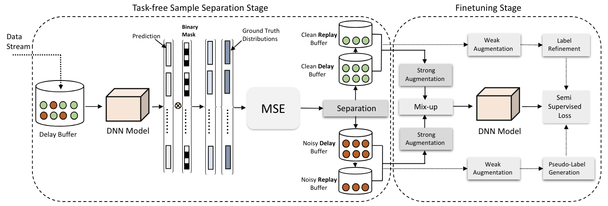
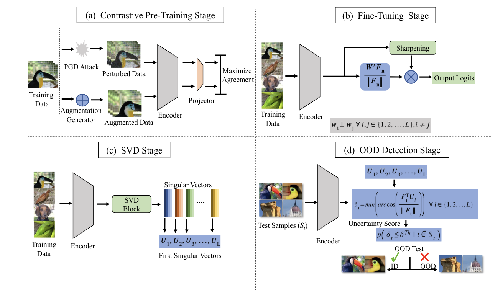

|
I am a Research Scientist at Bosch, working on the foundation model for sensor and wi-fi data interpretation. I recently completed my Ph.D. journey at the LCWN Lab, UCF, where I was advised by Prof. Nazanin Rahnavard and co-advised by Prof. Mubarak Shah. I have a broad interest in various topics in computer vision and machine learning. My Ph.D. research primarily focused on safe, responsible, and robust AI; including adversarial attacks and defenses, out-of-distribution (OOD) robustness, domain adaptation, and learning with noisy labels. I have also worked on compressive sensing, 3D Scene generation, video generation, continual learning, and multi-modal learning. |
{kind=link}
|
July 2024: My work on AI security got accepted to ACM CCS 2024 |
|
|
|  |
Nazmul Karim, Niluthpool Mithun Chowdhury, Abhinav Rajvanshi, Han-pang Chiu, Supun Samarasekera, Nazanin Rahnavard CVPR, 2023 paper/ code/ bibtex / video A curriculum learning-aided self-training framework for SFDA that adapts efficiently and reliably to changes across domains based on selective pseudo-labeling. Specifically, we employ a curriculum learning scheme to promote learning from a restricted amount of pseudo labels selected based on their reliabilities. This simple yet effective step successfully prevents label noise propagation during different stages of adaptation and eliminates the need for costly memory-bank based label refinement. |

|
Nazmul Karim, Mamshad Nayeem Rizve, Nazanin Rahnavard, Ajmal Mian, Mubarak Shah CVPR, 2022 arxiv / bibtex / code UNICON is a robust sample selection approach for training with high label noise. It incorporates a Jensen-Shannon divergence-based uniform sample selection mechanism and contrastive learning. |
|  |
Nazmul Karim, Umar Khalid, Ashkan Esmaeili, Nazanin Rahnavard CVPR, 2022 arxiv / bibtex / code The task of continual learning requires careful design of algorithms that can tackle catastrophic forgetting. However, the noisy label, which is inevitable in a real-world scenario, seems to exacerbate the situation. While very few studies have addressed the issue of continual learning under noisy labels, long training time and complicated training schemes limit their applications in most cases. In contrast, we propose a simple purification technique to effectively cleanse the online data stream that is both cost-effective and more accurate. |
|  |
Umar Khalid, Ashkan Esmaeili, Nazmul Karim, Nazanin Rahnavard CVPR, 2022 arxiv / bibtex / code We propose a simple yet effective generalized OOD detection method independent of out-of-distribution datasets. Our approach relies on self-supervised feature learning of the training samples, where the embeddings lie on a compact low-dimensional space. Motivated by the recent studies that show self-supervised adversarial contrastive learning helps robustify the model, we empirically show that a pre-trained model with self-supervised contrastive learning yields a better model for uni-dimensional feature learning in the latent space. |